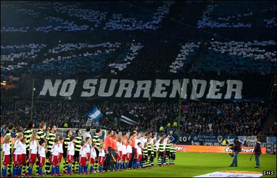

Futbol Sadece Futbol Değildir
Bahar geldi ya, beden dersini salonda değil dışarda yapma zamanı. Biraz spor konuşalım dedim. Yani ana başlık olarak spor. Aslında futboldan bahsedicem sana biraz. Ama “artık önümüzdeki maçlara bakıcaz” falan gibi klişelerden değil, rekabetin kendisinden bahsetmek istiyorum. Yani bir nevi sporcudan değil taraftardan. Pele’yi Maradona’yı herkes biliyo, ama mesela la Curva’yı, Ultras’ı?
Real Madrid – Barcelona. Bilinen adıyla El Clásico. Dünyanın en büyük derbilerinden biri. Ve şimdi çoğunuzun bildiği gibi iki haftada (muhtemelen) 4 El Clásico oynanacak, dünya futbola doyacak. Muhtemelen diyorum çünkü ikisi kesin, diğer ikisi her iki takımın Şampiyonlar Ligi’nde turu geçmesine bağlı. Ama her iki takım da ilk maçlarını farklı kazanarak artık bu durumu neredeyse garanti hale getirdiler. Tabii klişeye girdim diye kızmazsanız, top yuvarlak ve herşey olabilir. Peki nedir derbi, nedir bu maçın önemi, nooluyo da bütün dünya bunu konuşuyor dersin prenses?
Futbolu icad ettiğini iddia eden (aksi iddialar da var) İngilizlerin, aynı şehrin iki takımının karşı karşıya gelmesine verdiği isim olan “derby”, artık üç düzlemde ele alınsa iyi olur: şehir derbileri, komşu bölge derbileri ve rekabetler. Sonuncuya karşılık bulmak zor, düşmanlık da denebilir (orijinali: “rivalry”) ve bu da onlardan biri, muhtemelen ve bence de en büyüğü.
Simon Kuper’in kitabının da ismi olan (saçma sapan bir çeviri, ama güzel bir laf – orijinali: “football against the enemy”) Futbol Asla Sadece Futbol Değildir lafını hatırlamak gerek burada. Dünyadaki önemli rekabetlere şöyle bir göz atarak durumun ciddiyeti hakkında biraz daha iyi bir fikir sahibi olabilirsin prenses. Birkaç örnek vereyim başlarken. Baştan söyleyeyim prenses, bu rekabetlerin çoğunda taraf tutuyorum, “bilgi” kısımları tarafsız olsa da “yorum” kısımları kişisel görüşlerimdir.
Bizde hepsine “ezeli rekabet” dense de, adı olan önemli şehir derbilerinden biri İskoçya’da yaşanır: Old Firm, yani Glasgow Rangers – Celtic. Burada sadece futbol oynanmaz, dinler çarpışır. Protestan kimliğine sahip İskoçların takımı Glasgow Rangers ile, İrlanda’dan İskoçya’ya göçmüş ve İngiliz sömürgesinden bıkmış katolik İrlandalıların kurduğu Celtic savaşır o maçta. Ayrıca bir bağımsızlık mücadelesi de var işin içinde yani. Tribünde iskoçya bayrağı pek görülmez. Bağımsızlık yanlısı ve katolik Celtic taraftarı İrlanda bayrağı açarken, protestan ve Birleşik Krallık yanlısı Glasgow Rangers taraftarı Birleşik Krallık bayrakları açar. Bu duruma uygun olarak Cetic renkleri yeşil beyazken, Rangers renkleri kırmızı mavi ve beyazdır. Dinî kısmı ateist bendenizi hiiiiç ilgilendirmese de, Bursasporlu ve özgürlükçü biri olarak bu derbide açıkça Celtic taraftarıyım prenses. Yaşasın bağımsızlık, kahrolsun sömürgeci emperyalizm. Taa uzaklardan bile taraf olunacak önemli bir mücadele bu. Taraftar da, haklı olarak öyle ateşlidir ki, katolik olduğunu gizlemeyen ve eski Celtic oyuncusu olan Mo Johnston’ın attığı golle 1-0 kazandıkları maç için, “o maç 0-0 bitti” der Rangers taraftarları.
İngiltere’den verecek örnek sonsuz, önemli bazıları Birmingham – Aston Villa, Liverpool – Everton, Arsenal – Tottenham olarak sayılabilir. Rekabetin kökeninde genelde önemli politik/dinî/sosyal motiflerden çok komşuluk ve sportif rekabet yatar. Liverpool – Everton örneği özeldir, tarftar birarada oturur ve öfke/nefret düzeyi oldukça düşüktür. Keşke dünyaya örnek olsa da tüm maçlarda tribünler karma olabilse, ama nerde… İngiltere’deki tribün rekabetlerine holiganizm damga vurmakta. Chelsea’nin faşist taraftar grubu Head Hunters (isme bak, kelle avcıları!), Milwall’lu Bushwackers, Birmingham Zulu gibi holigan grupları, korkulan şiddet yanlısı grupların başında gelmektedir. Muhteşem ingiliz tribün kültürüne kötü bir yafta yapışmasına sebep olan bu ekipleri kınıyor, ne varsa Liverpool’da var diyorum. “Kop” tribününde şovlarını sürdüren ve “You’ll never walk alone” şarkısının gerçek sahibi olan Liverpool’lularla 2005’te ülkemizde oynanan Şampiyonlar Ligi finalini izlemek nasip oldu ki, hayatımın en önemli tribün deneyimlerindendir. Karşı tarafta Milan’lı Fossa dei Leoni’nin olduğunu düşünürsek, sadece maç değil tribünler de bir başka güzeldi.
Bir başka şehir rekabeti örneği komşudan gelsin: Panathinaikos – Olympiakos. Her ne kadar üç büyük Atinalı’dan AEK’ya haksızlık gibi görünse de, son zamanlarda Fenerbahçe – Galatasaray rekabetinin Beşiktaş’ı hafifçe de olsa konunun dışına itmesi gibi bu ikisi arasındaki rekabet en ateşlisidir Atina’da. Zengin mahallesinin takımı yeşil beyazlı Panathinaikos (yine renklere sempati beslemeden edemiyorum tabii) ile fakirlerin takımı kırmızı beyazlı Olympiakos sınıf mücadelesi verir bir çeşit. Gönül bir yandan ister istemez mazlumdan, fakirden yana kayıyor ama, 1995’ten beri şampiyonluğu sadece iki kere Pao’ya kaptıran Olympiakos’un bu ezici üstünlüğü hakkında şaibeler de uçuştuğunu belirtmeliyim. Hal böyle şaibeliyken yarım ağızla da olsa burada Panathinaikos’luyum prenses. Ayrıca ünlü Panathinaikos taraftar grubu Gate 13’ü “horto magiko” (sihirli ot) söylerken dinleyip gaza gelmeyen sporsever değildir kanımca. Sözleri ve hatta 9 dile (!) tercümesi ile şu linkte var misal:
Şehir rekabetlerinin en büyüğünden bahsetmeden geçmeyelim: Superclásico, yani Boca Juniors – River Plate. İtalya’dan gelen göçmenlerin, yani fakir kesimin takımı Boca Juniors yine gönlümü fethediyor, taraftarının lakabı “Milyonerler” olan zenginler klubü River Plate karşısında. Ayrıca rakip takım taraftarına delikanlı gibi “tavuklar” diye hitap eden Boca taraftarına karşı, Boca’lılara “çöp toplayıcıları, pis kokulu lağım fareleri” gibi aşağılık isimler takan River taraftarına pek de saygı duyabilecek gibi değilim. Zamanında efsane futbolcu Maradona, Argentinos Juniors takımında oynarken kendisine River tarafından yapılan transfer teklifini “hayalim Boca’da oynamak” diyerek reddetmişti. Bu da fikrimi destekliyor ve Boca diyorum. En önemlisi olmayabilir ama, tüm dünya bu rekabetin en ateşli derbi olduğunda hemfikir. Buenos Aires’in bu iki dev klubü öyle sert bir rekabet içindeler ki, taraftarlar aynı mezarlığa bile gömülmezler. Mezara kadar değil, daha fazlası! Bu rekabetin büyüklüğünü Observer gazetesindeki yorumla vurgulayarak sonraki rekabete geçelim: “Derbi günündeki Buenos Aires’le kıyaslanınca, Old Firm ilkokul çocuklarının mahalle maçı gibi kalıyor”.
İtalya’daki şehir derbileri arasında öne çıkanlar Roma – Lazio ve Milan – İnter rekabetleri. Milan – İnter arasındaki rekabette az önce saydıklarım kadar sosyal, önemli bir durum yok. Aynı stadı paylaşan bu takımlar, (İnter Guiseppe Meazza der aynı stada, Milan San Siro) stadın iki kale arkasında (Milan için curva sud, inter için curva nord) muhteşem koreografilerle takımlarını destekler. Tabii Milan’ın Fossa dei Leoni taraftar grubunun, eskiden tüm dünyada saygı gören en önemli taraftar gruplarından biri olduğu gerçeğini belirtmeliyim. Neden eskiden? Çünkü bu taraftar grubu artık yok, yani var da adı değişti. Peki neden? Pankart kaptırdılar da ondan prenses. Bak bu önemli işte. Askerde sancak kaptırmak neyse taraftar için pankart kaptırmak odur. Artık Fossa dei Leoni (aslan yatağı) yok, çünkü Milano’lu Juventus taraftar grubu Viking Juve ekim 2005’te onların pankartını çaldı ve görüntüleri yaydı. Öncü ultralardan olan Fossa dei Leoni de kendini feshetti ve kısa süre sonra Guerrieri Ultras adıyla yeni bir oluşum ortaya çıktı. Dünyanın en özenilen ve beğenilen taraftar gruplarından ve ultraların öncülerinden olan bu grubun eksikliğini İnternazionale taraftarı bile hissetmekte ve onları özlemektedir.
Burada ultras ile ilgili bir parantez açmak isterim. Birincil amaçları karşı takım taraftarıyla kavga etmek, küfretmek ve onlara haddini bildirmek olan holiganlardan çok farklı olan ultraların önceliği takımlarını desteklemektir. Genellikle lümpen ve faşist olan holiganların aksine, ultralar endüstriyel futbola karşı tribün kültürünü ön plana çıkaran ve sosyal bir duruş sergileyen taraftar gruplarıdır.
Lazio – Roma arasındaki rekabette yine politik duruş farklılıkları göze çarpar. Demokrat Roma taraftarına karşı şiddet yanlısı ve faşist Lazio’lular tüm avrupanın tepkisini toplayan Mussolini yanlısı bir taraftar grubudur. Zenci oyunculara muz fırlatmak gibi ırkçı hareketler, nazi selamıyla marşlar söylemeler, ne türlü pislik ararsanız Lazio taraftarında bulabilirsiniz. Roma olimpiyat stadı dışında kişisel olarak (sadece İtalyan olmadığım için) beni tehdit ettiklerini söylersem artık iyice nefretim netleşir. Roma taraftarları araya girmese ne olurdu bilemem. Lazio kümeye!
Gelelim bari Türkiye’ye de. Tabii ki dünyanın en büyük rekabetleri arasında gösterilen Fenebahçe – Galatasaray mücadelesinden bahsetmek gerek önce. Öne çıkan taraftar grupları UltrAslan ile Genç FB. UltrAslan bir çatı vazifesi görür, bünyesinde die for you, hell, sultans, ölümüne, tekyumruk gibi grupları barındırır. Fenerbahçe’de Genç FB’nin yanısıra kill for you, uniFeb, Esenler gibi ekipler var. Esenler grubu Aziz Yıldırım’a muhalefetiyle dikkat çekiyor.
Tabii Türkiye deyince Çarşı’dan bahsetmemek fena ayıp kaçar. Tüm dünyada saygı duyulan bu taraftar grubu Türkiye’nin en etkili taraftar grubudur diyebiliriz. Ultra sayılabilecek Çarşı’ya karşı en büyük direnişi ise Bursaspor’un Texas grubu gösteriyor. Yani taraftar rekabeti anlamında. Bölgesel rekabetlerin ülkemizdeki en önemli örneği olan Bursaspor – Beşiktaş rekabetinde, bir Bursasporlu olarak Çarşı’ya saygım daha büyük. Texas’a ultra demek mümkün değil çünkü. Hele ki Çarşı’nın 2-1 kazandığı Liverpool maçında (evet o maçı bence çarşı kazandı) yaptığı o muhteşem şovu tarih yazıyor. Tabii politik duruş başka, tribün şovu başka ve Texas’ı da hafife alamaz kimse. Texas – Çarşı bu konuda Fenerbahçe – Galatasaray’dan daha etkin bir rekabettir.
Tabii süper ligde olmadıkları için medyada çok yer almayan, ama aslında ülkenin en önemli rekabetlerinden biri olmaya hep devam edecek olan Göztepe – Karşıyaka rekabetine de değinmeliyiz. Yalı’dan isyan marşını bir dinleyin. Hangi ligde oynarsa oynasın tribünü dolduran taraftarıyla Göztepe İzmir’in önemli taraftar gruplarından. Karşılarında da Karşıyaka Çarşı var. Kendilerine 35 1/2 ismini layık gören Karşıyakalıların da pek aşağı kalır yanı yok hani. Basketbol takımlarına da sahip çıkan Karşıyakalılarla Göztepe arasındaki rekabetin süper lige taşınması en büyük dileğim. Alabileceğim tüm tepkilere rağmen tuttuğum tarafı belli etmek istiyorum. Buçuk nedir yahu, hobbit gibi yarım adam gibi? Ayrımcılığı kendisini İzmir’den soyutlayan yarım buçuklar başlatmış gibi geliyor ve bunu pek beğenmiyorum açıkçası.
Konuyu tribün rekabetine döndürmeden önce Gecekondu (Ankaragücü), Tatangalar (Sakaryaspor), Kızılcıklı (Eskişehirspor), 07 Gençlik (Antalyaspor), Alkaralar(Gençlerbirliği), Çılgınlar(Trabzonspor), Tarzanlar(Manisaspor) gibi önemli taraftar gruplarıyla, Sakarya – Kocaeli, Elazığ – Malatya gibi bölgesel rekabetleriyle çok renkli bir tribün kültürüne sahip bir ülkede futbol seyircisi olmaktan çok memnun olduğumu belirtmek isterim. Gecekondu – Texas, Manisa – Sakarya gibi “kardeş tribün” örnekleri ise az rastlanan güzellikler. Her Bursa maçının 6. dakikası Ankaragücü lehine tezahürat yapan Bursa taraftarı ve aynı jesti 16. dakikada Bursayı destekleyerek tekrarlayan Ankaragüçlüler tribünlerimizin en güzel renklerinden. Adanademirspor taraftarının Livorno’yla dayanışması gibi uluslararası başarılar da belirtmeden geçmemek gereken bir başka konu.
Lafı çok uzattık. Önümüzdeki 4 El Clásico’dan başlamıştık, orada da bitirelim. Real Madrid – Barcelona maçı tüm dünyada en çok izlenen maçtır daima. Real Madrid faşist diktatör Franco’nun, milliyetçi/baskıcı İspanya’nın takımıdır. Barcelona ise bağımsızlık yanlısı Katalanların en büyük mutluluk kaynağı. Barcelona çok yakın zamana kadar formasına reklam almadı. Son 3-4 senedir formalarında unicef reklamı taşıyorlar ve bırakın para kazanmayı, bunun için unicefe “para ödüyorlar”. Tabii bu formada reklam fikrine alışmak ve devlet destekli züppeler Real Madrid’le mücadelede geri kalmamak için. Barcelona formasında reklam olmamasının iki farklı açıklaması var. Daha resmi olan tavır der ki “Barcelona’dan büyük marka gösterin, göğsümüze yazalım”. Gayrıresmi ifade ise daha net: “Milli takımlar reklam almaz”. Takdir edersiniz ki Katalonya milli takımı “teknik olarak” yok, pratikte ise dünyanın en iyi takımı açık ara onlar. İspanya iç savaşında Nazi Almanyası ve Mussolini’nin İtalyasından destek alan faşist Franco, sosyalist direnişçileri yendikten sonra ülkeyi 39 yıl demir yumrukla yönetirken Barcelona’yı ezmiş ve açıkça Real Madrid’i desteklemiştir. Şampiyon klüpler kupasını 5 sene üstüste kazanan kadrodaki oyuncuları kısmen zorla transfer etmesi yetmezmiş gibi, İç savaş sırasında tehdit ve baskılarla Barcelona’yı kasten yenilmeye zorlanmış, protesto için 11-1 kaybettiklerinde 8 futbolcu tutuklanmıştır.
Geçmişte yaşanan maça çıkmadan önce yabancı futbolcuların pasaportlarına sudan sebeplerle el konulması, Katalan dili ve kültürünün yasaklanarak yok edilmeye çalışılması gibi olaylar Barcelona’nın “bir klupten daha fazlası” sloganının haklılığını kanıtlar. Efsane futbolcu Johan Cruyff’un diktatör Franco’nun takımında asla oynamayacağını basına açıklaması Barcelona’nın gurur kaynaklarından biridir. Çok yakın tarihte de dünyanın en iyi futbolcusu olarak görülen Lionel Messi’nin de aynı tavrı gösterip “asla real için oynamayacağım, hatta futbolu bıraktıktan sonra da Barcelona’da kalacağım” açıklaması başkentlilere fena kapak oldu. Para ve baskılarla zorla elde edilmeye çalışılan başarılara rağmen, Barcelona tüm dünyanın hemfikir olduğu gibi açık ara gezegenin en iyi takımı ve ligin ilk yarısındaki maçtaki skoru (5-0, yazıyla BEŞ SIFIR) 4 maçta da tekrar etmesini umuyorum. Zamanında döktükleri paralarla kendini rezil eden los Galacticos bu maçların hepsinde yine rezil olacak ve Barcelona (İspanya’nın değil) Katalonya’nın gururu olmaya devam edecektir. Dünyanın en kendini beğenmiş futbolcusu çakma ronaldo (sevgilisi onu terk etme sebebi olarak “bana baktığından çok aynada kendine bakıyordu” demişti) ve hırs ve kibirden oluşmuş (ama hakkını yemeyelim son derece başarılı) teknik adam Mourinho bir kez daha (aslında dört kez daha) başlarını önlerine eğip evde gizli gizli ağlayacaklar. Gerçek Katalan kaptan Puyol (d. 13 nisan 1978, mutlu yıllar kaptan) ise takımının başında bir beyefendi, bir lider, bir ağabey olarak haklı gururunu yaşayacak. Haydi Aslanlar!


{kind=link}
{kind=link}
{kind=link}
{kind=link}
“Kara Deryalarda Bir Fenersin!”
Vamos Bien…
bir araştır bakalım…
Zy
Vamos Bien’i de, FenerbahCHE’yi de bilmiyor değilim. İsmi lazım değil şerefsizin protesto edilmesi sonrasi Tekyumruk’a verdikleri desteği de bilirim. Profil bilgilerime bakarsanız ahkamlarımı kadıköy’den kestiğimi okursunuz. Burada politik altyapısı olan ‘rekabetlerden” bahsederken ayıp olmasın kabilinden türkiyeye şöyle bir dokundum. FB-GS takdir edersiniz ki bu ‘savaşlara’ kıyasla biraz sidik yarışıdır (maalesef).
Ultras apayrı bir duruştur. Ama ülkemizde o duruşu sergileyen var mı dersen az var derim bunlar ne çarşıdır ne ultraslandır.yönetime yağ çeken onlardan bilet parası isteyen adam zaten o görüşe sahip olamaz… Futbol tabiiki de sadece futbol değildir. St.paulilerin dediği gibi dazlakları siktir edin bunu faşistlere karşı söylemişlerdir. ultra ya yine açıklık getiriyim pankart açarak olmuyor ama bu işler gerçekten. başkaları tarafından kendi başkanına küfür ettiriyorlar ya. ayrıca kara deryalar fenerle aydınlanır kanla değil endüstriyel futbola karşıt olarak bilet fiyatlarına. hababam artık istesede maça gelemez mahmut hoca daha bir sürü pankart var böyle. ama işte Türkiyedeki ultra kültürü ne kadar var tartışılır. saygılar
İspanyada Katalan takımını desteklemek Türkiyemde de yarın öbür gün olmadık adamları desteklemektir bence. İspanyold eğiliz o ayrı. Zevk için izleriz. Ama konu biz olunca böyle şeyler bana ters yahu.
Ellerine sağlık.
@ cem: AdanaDemirSpor en “ultra” duruşa sahip takım gibi görünüyor değil mi:) Onlara kıyasla diğerleri dediğiniz gibi bilet için küfür, başkanı için bıçak savurup duran kiralık taraftar. Haklısınız.
@ mavi: “Olmadık adamlar”dan kasıt nedir? Diyarbakırspor TARAFTARına durduk yere PKK dışarı diye bağıranlardır ayrımcılık, ayrılıkçılık yapanlar, eğer buna bir göndermeniz varsa. Yazıda belirttiğim gibi Bursasporluyum. Ama bursasporun en büyük utancıdır bence o rezillik. Maç izlemeye ve kentinin takımını desteklemeye çalışan insana durduk yerde yafta yapıştırmak hiçbişeyle açıklanamaz. Neyin ters neyin düz olduğunu değerlendirirken objektif kalabilmenizi umarım.
Saygılarımla…
(Değerlendirmelerini yeni gördüğüm için geç bir yorum oluyor) Severek okuduğum yazıların sahibinin Bursasporlu oluşu beni daha bi mutlu etti. Bursa tribünlerinin ortak zekası sizin gibi değerli görüşleri de bir araya getirdiğinde çok daha iyi olacaktır. Teksas-çarşı kıyaslaması, kent gerçekliğinin yanı sıra tribünün demografik olgusuyla tartışmaya çok açık. Kanuni döneminde merkeze küstürülen, geriye itilen bir şehrin isyanı da var Bursa tribünlerinde. ‘Kahpe Bizans’, karikatüre edilmiş ‘Teslim ol İstanbul’ nidalarıyla Fatih’in misyonunu tekrarlayarak geçen sene fethediliyor, Bursaspor bayrağının Boğaz’a asılması ise taraftarın gözünde bu duyguya işaret ediyordu.